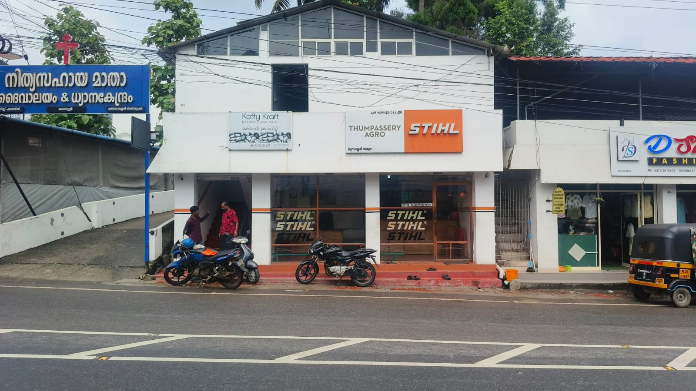
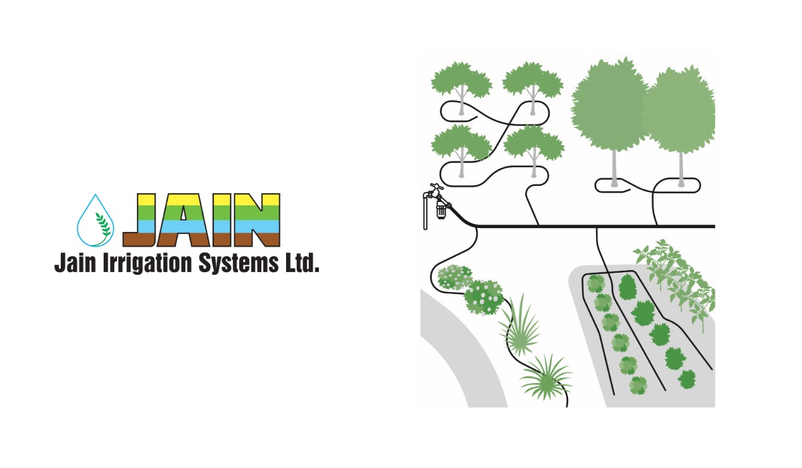
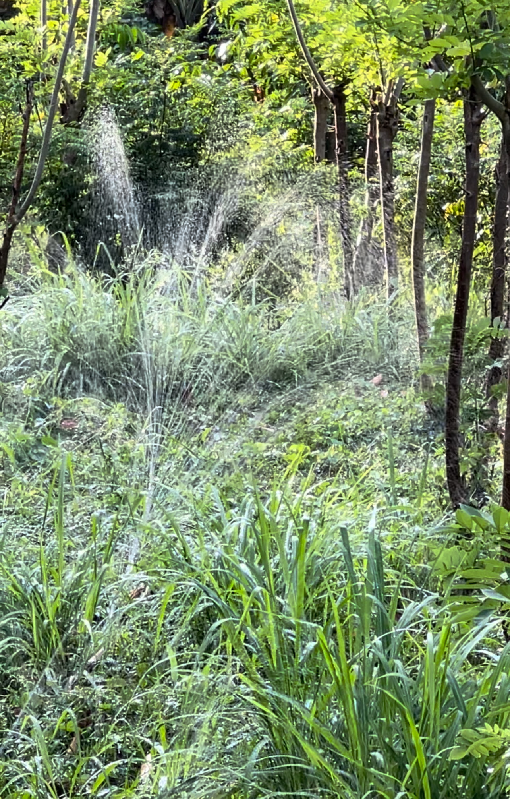

Thumpassery Agro supplies STIHL equipment, Jain Irrigation systems, Driptech, spare parts and service support through TAGRO branches.
Thumpassery Agro supplies STIHL equipment, irrigation systems, spare parts and service support through branches in Kerala and Tamil Nadu.
Whether you need a chainsaw, brushcutter, irrigation components, spare parts or repairs, our branches are available to help.

Choose the area you need. Details, stock and service support are handled on the individual pages.
Chainsaws, brushcutters, sprayers, blowers and cordless tools.
Explore STIHL →
Drip irrigation, sprinklers, filtration and fertigation.
Explore Jain →
Low-pressure, practical irrigation for plantation and farm use.
Explore Driptech →Stock and service availability differ by branch. Please call before visiting for product availability or service work.
KVR · NDD · PKM · OYR · SDM
Karavaloor, Nedumangad, Ponkunnam, Oyoor, Sadanandapuram
MDM · SKT
Marthandam, Shencottai
STIHL is handled across the network. Irrigation is currently centered at Karavaloor while the network is being reorganized.
For product availability, service status or a spare part enquiry, contact the nearest branch.
Each branch has direct phone and mobile contacts listed on the branches page.
For machines, spare parts and repairs, please call ahead and visit the nearest TAGRO branch.